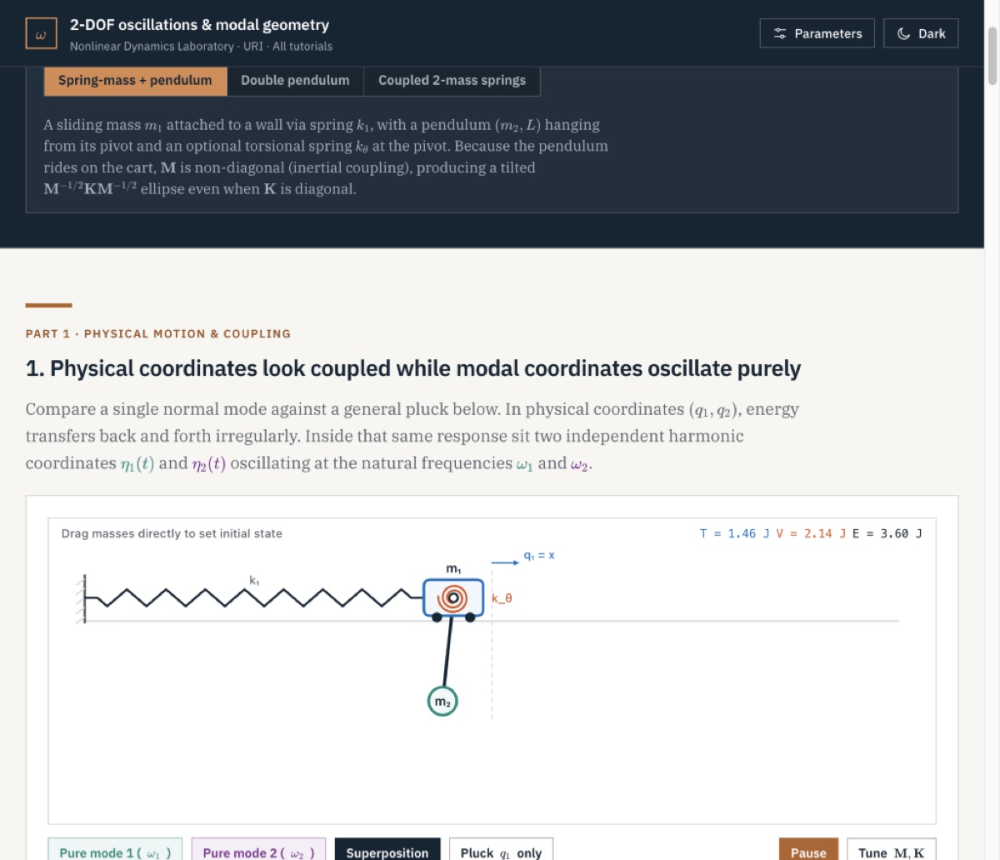
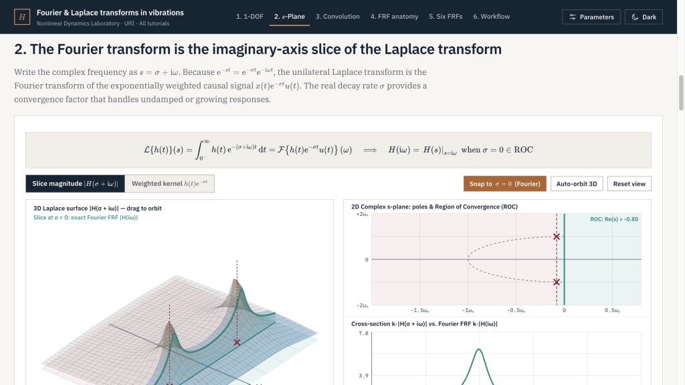
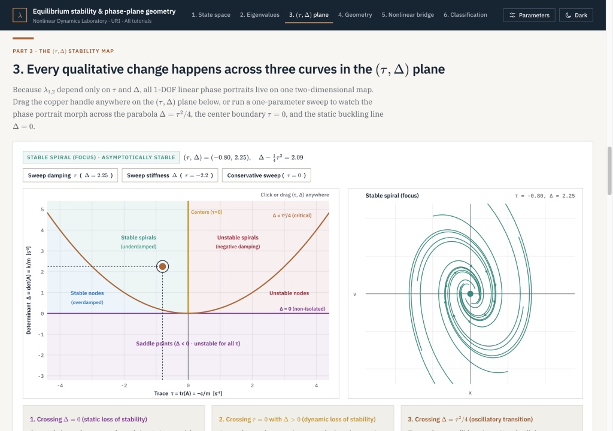
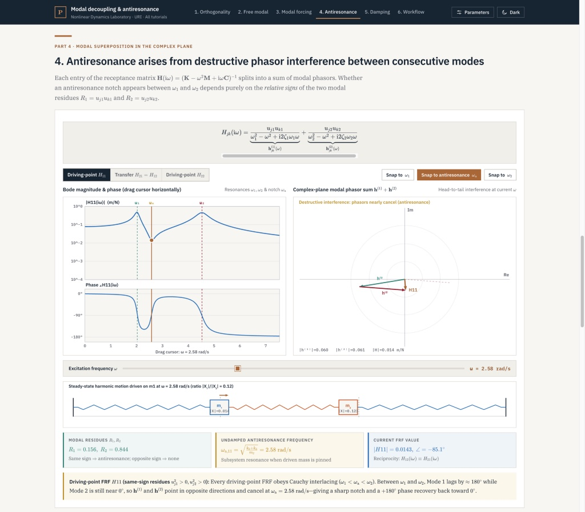
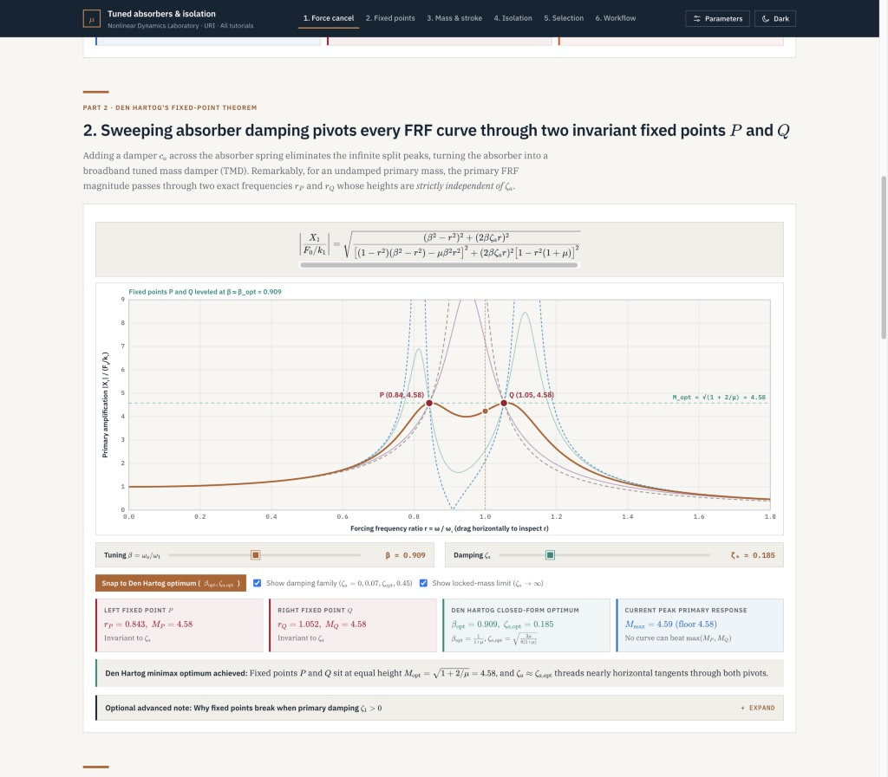

Available modules

From coupled energy ellipses to linear normal modes
Explore spring-mass pendulum, double pendulum, and coupled mass systems. Visualize kinetic and potential energy bowls, ellipse tangency, the symmetric mass-weighted stiffness ellipse, simultaneous diagonalization, and modal superposition.

Fourier and Laplace transforms in vibration analysis
See how the Fourier transform arises as the imaginary-axis slice of the 3D Laplace surface |H(σ + iω)|. Explore poles, ROC, impulse response convolution, Bode/Nyquist anatomy, and all six dimensional FRFs (receptance, mobility, accelerance, and reciprocals).

Equilibrium stability, eigenvalues, and phase portraits
Explore the characteristic equation, eigenvalues, and eigendirections of linearized 1-DOF systems. Drag across the Poincaré (trace, determinant) plane, visualize Liouville phase-area evolution and canonical modal coordinates, and test Hartman–Grobman limits on nonlinear oscillators.

Modal decoupling, forced 2-DOF response, and antiresonance
Visualize mass-weighted orthogonality, free modal superposition, selective modal forcing, complex-plane phasor cancellation behind driving-point antiresonance zeros, and Rayleigh versus non-proportional damping.

Tuned vibration absorbers, Den Hartog fixed points, and isolation
Animate dynamic force cancellation, sweep damping across Den Hartog's invariant fixed points P and Q, balance mass ratio against absorber stroke clearance, and explore the r = √2 transmissibility crossover.